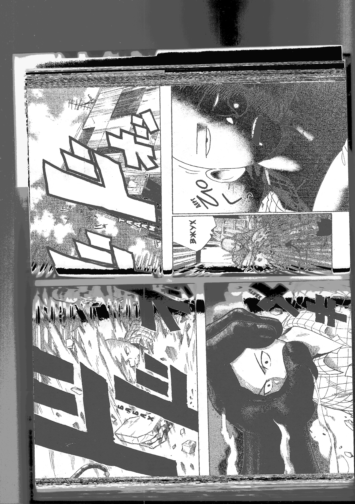
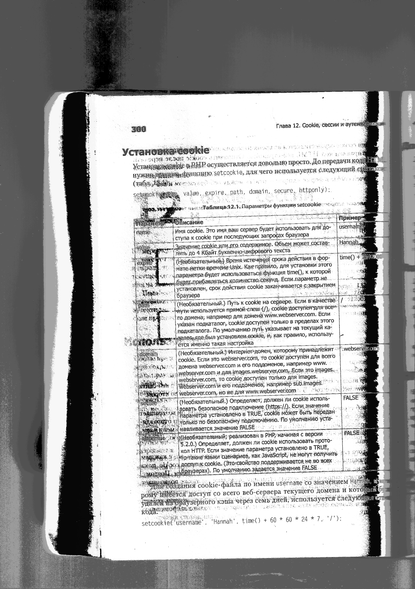
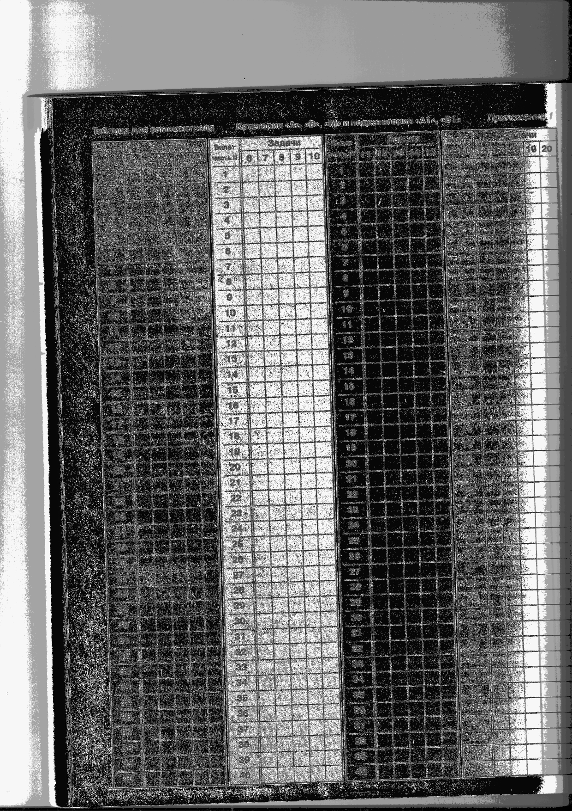
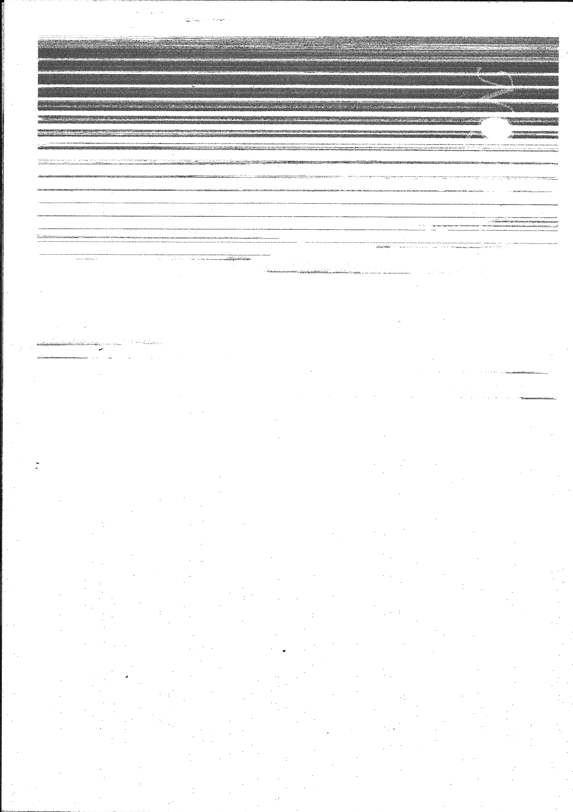
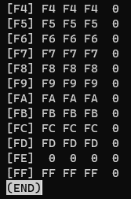
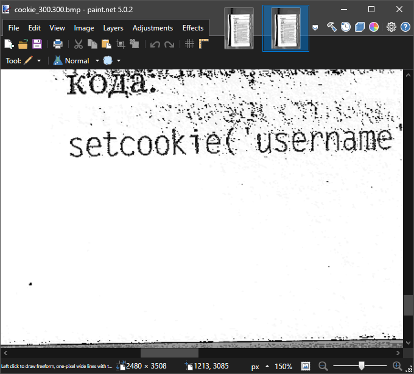
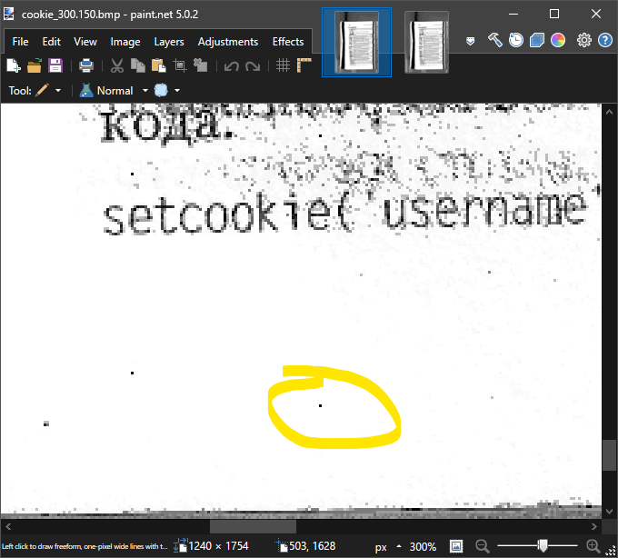
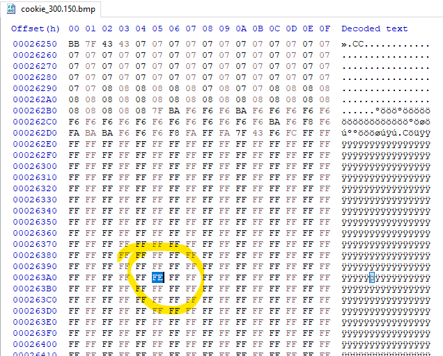

Как применить обновление
- Опубликовано: Администратор, 11.01.2011
Благодаря нашему проприетарному расширению стандарта PJL обновление достаточно просто распечатать удобным для вас способом! Например, открыть для записи дескриптор устройства в вашей ОС и записать туда содержимое файла обновления! Мы даже не стали делать отдельное приложение для этого, вот на столько просто!
Сам файл обновления вы можете получить по ссылке: FIRMWAREUPDATE.pjl.
- Изменено: Администратор, 23.01.2011
Важно! Обновление применимо только к устройствам, произведённым после августа 2010 года!
Обсуждение
- Опубликовано: usver1989, 17.01.2011
Здравствуйте, после применения обновления в соответствии с описанием на сайте начали происходить странные вещи: при вызове сканирования устройство какое-то время ведёт себя совершенно неадекватно, а за тем выключается. При этом весь остальной функционал сохранён. В чём дело?
- Опубликовано: Администратор к usver1989, 20.01.2011
Здравствуйте. Мне бесконечно печально слышать о таких проблемах пользователей. Пожалуйста, сообщите информацию, идентифицирующую ваше устройство.
- Опубликовано: usver1989 к Администратор, 21.01.2011
Забирал я его из вашего офиса в мае того года. Этикеток и номеров на корпусе не вижу.
- Опубликовано: Администратор к usver1989, 22.01.2011
Я поговорил с программистами. Оказывается, было внутреннее обновление прошивки, которая используется устройствами, выпущенными после августа 2010 года. Говорят,проблема в том, что фукнция, реализующая сканирование и запись значения пикселей в передаваемый буфер в старой версии версии была на другом адресе. Я посмотрел файлы для сборки обновления, и это действительно так. Там эта функция не содержится, но адрес её такой:
22: 00200000 0 NOTYPE GLOBAL DEFAULT ABS request_greyscale (BYTE * output)
Укажите, пожалуйста, данные, по которым с вами можно связаться или приезжайте в офис - всё починим.
- Опубликовано: Администратор к usver1989, 23.01.2011
Изменил информацию в посте с обновлением.
- Опубликовано: anon, 03.02.2011
Я пытался отсканировать книги для оцифровки в библиотеке и заметил какие-то странные точки на изображении.

А в 300dpi их нет!


Как это получается?!
- Опубликовано: Администратор к anon, 04.02.2011
Здравствуйте, вы уверены, что проблема не в состоянии стекла сканера? (протрите его)
- Опубликовано: chanter к anon, 03.02.2011
Думал, это какие-то особенности моего устройства. Вот аналогичный пример:
 В 300 dpi уже без точек. А их и правда сложно заметить если не искать.


- Опубликовано: anon к Администратор, 03.02.2011
Да как вы такое говорить такое своим клиентам! Всё чисто! А вот с вами явно что-то мутное происходит. Я посмотрел ещё свои сканы. Даже на тёмных изображениях эти точки! Как это понимать?!

- Опубликовано: Администратор к anon, 03.02.2011
Я не вижу никаких других причин появления этих ваших "странных точек". Как и не вижу их на последних картинках! Как вы можете говорить о чёрных точках, если там всё чёрное!
- Опубликовано: anon к Администратор, 03.02.2011
В том то и дело! Они там есть!
- Опубликовано: hackerman к Администратор, 03.02.2011
Кажется, кто-то спрятал стыдный бекдор. Непонятно, зачем, но он чудесно работает!
- Опубликовано: hackerman к Администратор, 04.02.2011
Конечно, громко говорить, что он "спрятан", когда в открытом доступе находятся исходные файлы. OpenSource решения считаются безопасными, ибо "любой может открыть и посмотреть". Так вот. Я посмотрел и ЭТО мне очень не нравится.
- Опубликовано: anon к Администратор, 06.02.2011
Вы говорите, что чёрных точек нет, но в палитре у вас что то странное.
Да и если посмотреть на сами точки:
 Например, вот эта по координатам 503, 1628. Для этого файла отступ до данных о пикселях составляет 1078 байт. Информация о пикселях "перевёрнута" в формате BMP, который вы используете, поэтому при ширине 1240 и высоте 1754 отсут до этого пикселя будет: 1078 + (1754 – (1628 + 1)) * 1240 + 503 = 156681 = 0x263A5.
И, вроде, этот пиксель должен быть почти белым, но он ЧЁРНЫЙ, как и все остальные "странные точки"...
- Опубликовано: Администратор, 10.02.2011
Я бы не назвал это бекдором. Видимо, какая-то апрельская шутка программистов была. Даже оставили функцию для расчёта расстояний между этими "точками". Кажется, кто-то прокололся.